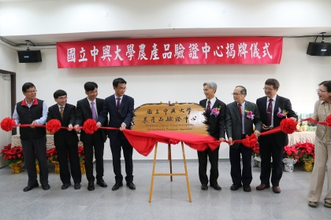
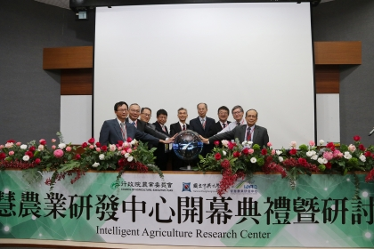
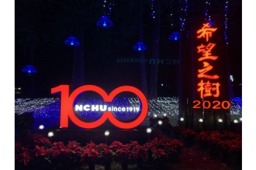

|  | 【公關組】中興大學農產品驗證中心揭牌 進駐食安大樓展新頁 |
|---|---|
| 國立中興大學農產品驗證中心成立至今13年，驗證件數逾1900家，為國內相當具公信力的驗證機構，109年正式進駐興大「食品與農業安全檢測大樓」四樓新址，1月6日上午舉辦揭牌儀式。由中興大學校長薛富盛、行政院農委會主委陳吉仲及驗證中心主任段淑人等人共同揭牌。 此中心設立於民國96年5月11日，隔（97）年起，先後通過財團法人全國認證基金會(TAF)認證，取得產銷履歷農產品及有機農產品驗證之資格，擔負起為社會大眾把關農產品安全之重責。 該中心具有農學專業之堅強專家陣容與稽核團隊，在把關食品安全與培育人才方面不遺餘力。除辦理產銷履歷與有機農產品驗證外，亦配合政府政策推動多項工作，如：有機農業商品化資材審查、輸澳花卉驗證、國際有機同等性評鑑、東京奧運食材供應、有機及友善環境耕作栽培手冊、蔬菜良好農業規範(TGAP)整合等，並積極培訓農產品稽核人員與安全管理人才，定期舉辦教育訓練課程例如：農產品稽核員訓練課程、ISO 9001、ISO 22000、 HACCP、GLOBALG.A.P.、農業概論等課程，受訓人員已逾千人。 興大校長薛富盛表示，興大創校百年，農學發展一直是領先國內、享譽國際的領域，近年來食品安全受到社會高度的重視，興大具有全國農業生物科技研究頂尖之優勢，且擁有優秀的農業人才及技術資源。食安大樓由永豐銀行捐贈，為國內首創產學攜手打造的國家級食安檢測團隊，未來包含土壤調查試驗中心、食品安全研究所等校內檢測及教學研究單位也將陸續進駐。期盼興大農產品驗證中心進駐新址後，能持續成長茁壯、服務更多群眾。 農委會主委陳吉仲指出，興大在食品安全領域扮演非常重要的角色，此中心主要負責農產品產銷履歷驗證，與執行有機跟友善的驗證工作，目前國內的產銷履歷面積約2萬公頃，有機加友善為1萬4千公頃，佔全部耕地面積的1.5%，為亞洲第一。未來將持續鼓勵農民加入產銷履歷或有機、友善耕作，因應上述耕作方式的面積增加，驗證能量也須大幅度地提升。日後該中心所需要的人力、機器、設備農委會皆會全力協助，相關的驗證技術與成果，也歡迎跟農委會的相關單位包含防檢局、農糧署、藥毒所等進行交流，透過加強交流合作，提升整體驗證能量，讓國內外的消費者皆能買到安全的農產品。 揭牌儀式現場也展示由興大農產品驗證中心驗證通過之產銷履歷及有機農產品，展現歷年來農產品驗證中心豐富的執行成果。 | |
|  | 【公關組】中興大學成立智慧農業研發中心 結合AI與農業助產業升級 |
| 結合AI與農業人才，打造臺灣成為智慧農業重鎮。創校百年、農學研究受到國際肯定的國立中興大學12月27日舉辦「智慧農業研發中心」成立開幕暨研討會，該中心將作為產官學協作平台，以精準農業、設施農業、生態農業、林業、畜牧業及水產養殖業等六大主題為基礎，導入人工智慧協助農業升級，把臺灣的農業帶出去，連結在地、連結國際、連結未來。 開幕儀式由興大校長薛富盛、農委會科技處處長王仕賢、農試所副所長蔡致榮、興大副校長周至宏、副校長黃振文、農資學院院長詹富智等人共同啟動。該中心由行政院農委會與中興大學共同提供建置經費，興大副校長周至宏、農資學院長詹富智、土木系特聘教授楊明德及農藝系副教授楊靜瑩策畫，農委會科技處處長與農試所協助規劃，辦公室設於興大食品與農業安全檢測大樓7樓，提供智慧農業研發與推廣服務。 因應臺灣農業面臨的問題，如國際上農業競爭激烈、農業人口外移導致人力資源不足、及全球氣候變遷使得環境劇烈變化，急需進行農業轉型。為此，政府積極推動「新農業創新推動方案」，並列為「五加二」創新產業計畫之一，希望以跨領域合作方式，結合農業及科技創新，發展出可適應氣候變遷、提高生產效力以及質量保障的農業生產及經營方式。 興大智慧農業研發中心籌備處主任、農資學院院長詹富智表示，該中心將整合校內農資、生科、獸醫、理、工、電資、管理七大學院資源，並結合中部學研單位，包括農試所、藥毒所、種苗場、改良場、特生中心等單位，共同推動智慧農業產業的研發。針對農業發展的各面向，從育種、生產、環境與病蟲害的監測、設備開發、大數據收集與分析、物聯網建置、智慧傳輸、行銷等，進行跨領域合作研發。除連結在地外，未來也將連結國際，臺灣的農業生產技術領先東南亞，許多國家皆會到臺灣取經，透過智慧農業協助產業升級，將有助臺灣農業推展到國際。 開幕式後，同時舉辦專題演講研討會，聚焦三項主題，包含智慧農業政策、智慧農業技術及智慧農業教育，邀請各界專家學者進行交流對談，分享智慧農業發展之趨勢及現況，為興大智慧農業研發中心之運作開啟新頁。 | |
|  | 【媒體報導】慶祝百年校慶及耶誕 中興大學「希望之樹」今晚亮麗登場 |
| 耶誕節將至，南投縣仁愛鄉國立中興大學惠蓀林場，連續多年將園區7棵高達20公尺的台灣杉，以五彩繽紛的LED燈泡裝飾，並命名為「希望之樹」，今晚正式點燈，今年適逢中興大學建校滿百年，還特別增設校慶燈飾，與「希望之樹」一同陪伴遊客歡度耶誕、跨年，並持續至明年春節、元宵節。 台灣杉是台灣特有種，屬於柏科台灣杉屬植物，也是以「台灣」來做為屬名，非常難得，而台灣杉最高能長到90公尺，是亞洲高度最高的樹種之一，魯凱族原住民以「撞到月亮的樹」來形容它的高大，惠蓀林場園區內的大草皮即有7棵高約20公尺的台灣杉，樹形優美，已成為林場的代表地景之一。 每年耶誕節前夕，校方特別以成千上萬顆五彩繽紛的LED燈泡來裝飾7棵台灣杉，號稱是全台最高的天然耶誕樹，並命名「希望之樹」，今晚正式點燈，每週五、六傍晚5點半起會點亮「希望之樹」；今年適逢中興大學建校滿百週年，耶誕樹下增設以中興大學英文縮寫、阿拉伯數字100及Since1919的造型燈飾，周邊連結步道也營造浪漫燈海，為百年老校慶生，除了陪伴遊客歡度耶誕、跨年，還將持續至明年春節、元宵節。 惠蓀林場也備有居家美化首選的茶花、桂花等苗木，即日起至明年2月8日遊客入住惠蓀林場，即可免費索取希望小樹苗。 |